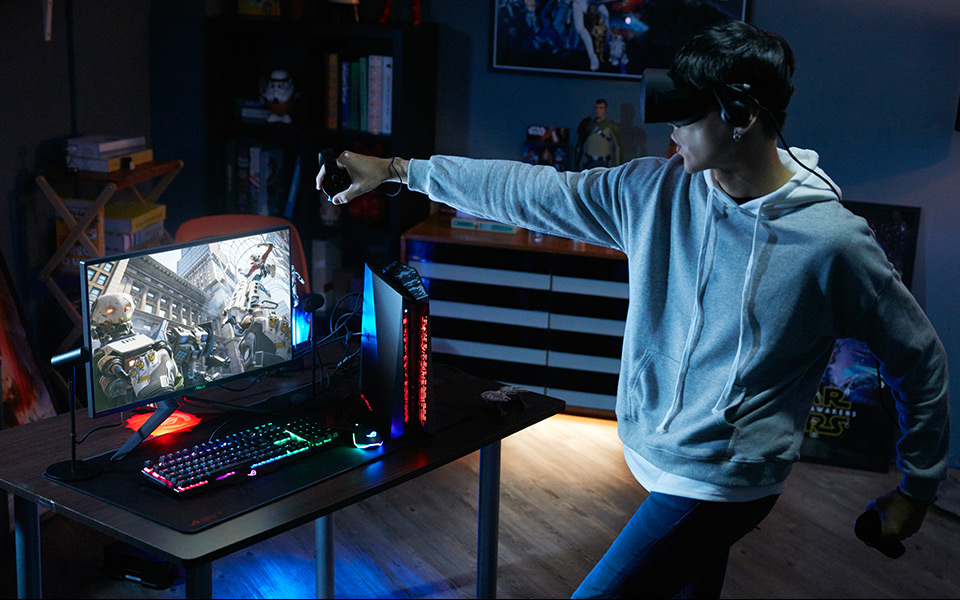
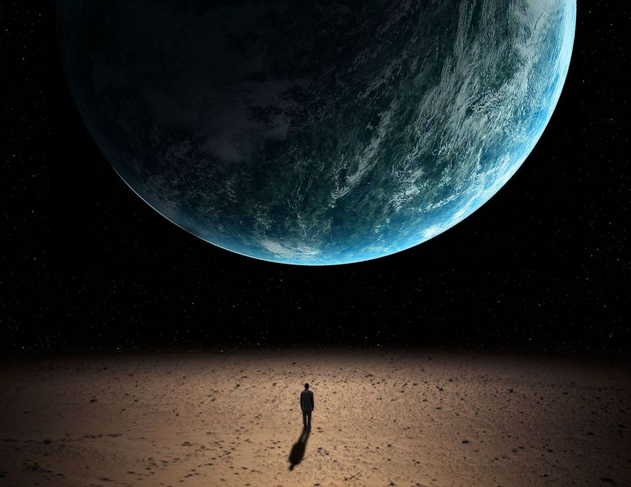

Ch.1 내 이야기를 들어볼래?

내 나이는 27. 27년 동안 나는 집 밖을 나가는 일이 거의 없었어. 학교 수업은 온라인으로 이루어졌고, 생필품도 전부 홀로그램으로 전송받을 수 있었기 때문이지. 집에만 박혀 지냈기에 직접 만난 친구는 거의 없었어. 심지어는 집에서도 가족과 대화를 나눈 것이 언제가 마지막인지 모를 정도였어. 다른 20대들은 이곳, 저곳 여행도 다니고, 경험도 쌓고, 친구들과 놀러다니던데 나는 그런 만남이 너무 싫었어. 그저 방구석에서 컴퓨터하는 것이 내 삶의
유일한 낙이었지. 여느 때와 같이 나는 컴퓨터를 하고 있었어. 그때 나는 매우 흥미로운 광고를 하나 보게 돼.
나는 원래 사람들과 인격적인 만남이 없었고, 가상 세계를 동경했기 때문에, 무엇보다도 지금 현실에 별다른 미련이 없기 때문에 고민없이 회사의 실험에 참가하겠다는 서류를 보냈어. 회사에서 곧바로 답이 왔고, 며칠 후 나는 실험실에 찾아가게 돼. 거기서 나의 육체에 대한 권리를 포기한다는 서약서에 서명을 하고, 영원한 가상세계로의 여행을 시작했어. 내 정신이 몸을 벗어나 비트화되어 사이버 공간으로 옮겨가게 된 것이지.

가상 세계에서의 생활은 나에게 너무나 완벽한 것처럼 보였어. 그 곳에서는 내가 원하는대로 무엇이든지 할 수 있었고, 모든 것이 자유로워진 느낌이 들었기 때문이야. 무엇보다도 가족의 간섭 조차없이 지낼 수 있으니까. 하지만 점차 시간이 지나면서, 나는 가상세계에서의 생활이 무언가 잘못됐다는 걸 느끼기 시작했어. 가상세계에서는 나의 욕구는 오직 학습된 쾌락 뿐이라는 걸 꽤 시간이 흘러서야 깨닫게 됐지. 그러고보니 가상 현실에서 나는 목이 마르지도,
잠을 자고 싶지도, 몸의 피로함에 지쳐 쓰러지지도 않았어.
육체의 감옥에서 해방된 게 아니냐고 생각을 할 수도 있을 것 같아.
하지만 몸 없는 정신은 그저 공허한 지식을 아는 것에 지나지 않아.
나의 살아있는 몸으로 사람과 사물을 손과 피부로 느끼고,
시원한 물이 나의 입술에서 목구멍으로 넘어가는 생생한 그 체험없이는
내가 살아있는 게 아니게 돼.
너무나 뒤늦게 현실 세계에 발을 딪고 몸을 가지고 살아가는 인생이 인간에게 꼭 필요한 이유를 알게 되었어.
내이야기를 듣고 있는 너에게 지금 나의 이야기를 말하고 싶었어.